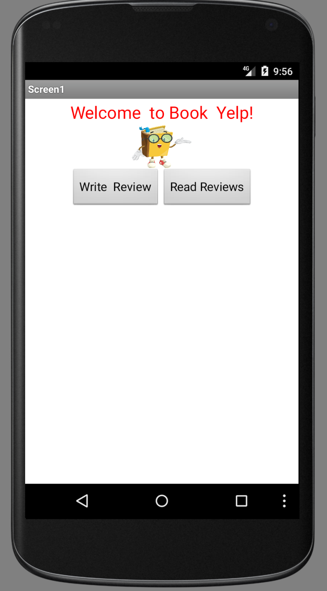
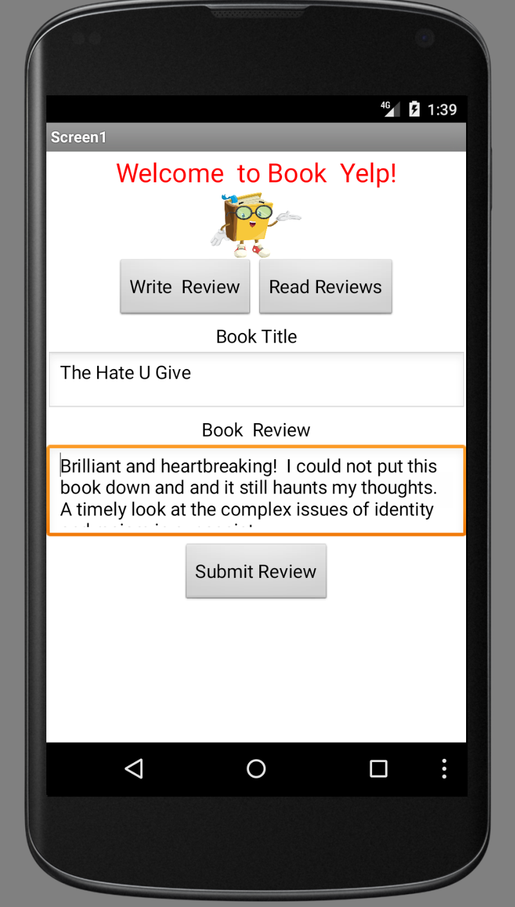
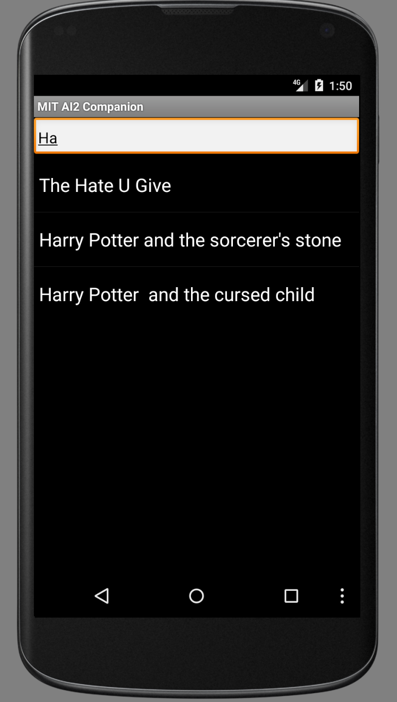
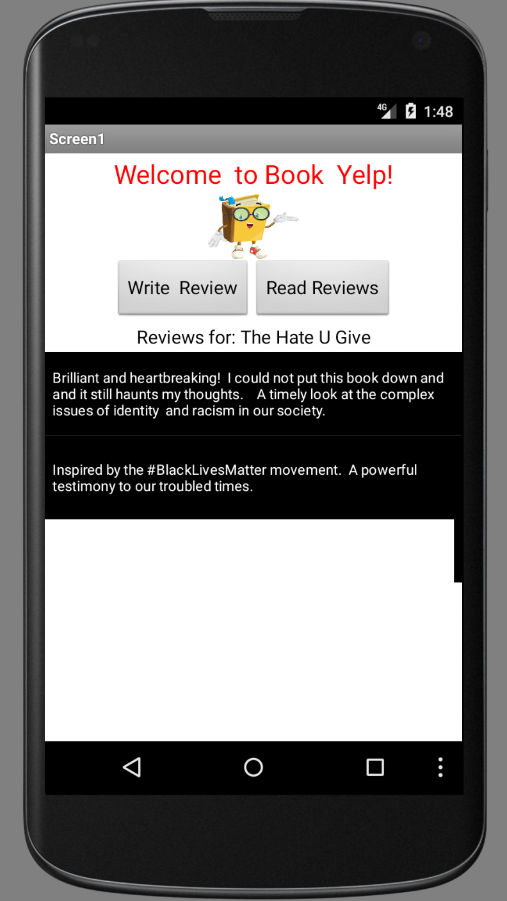
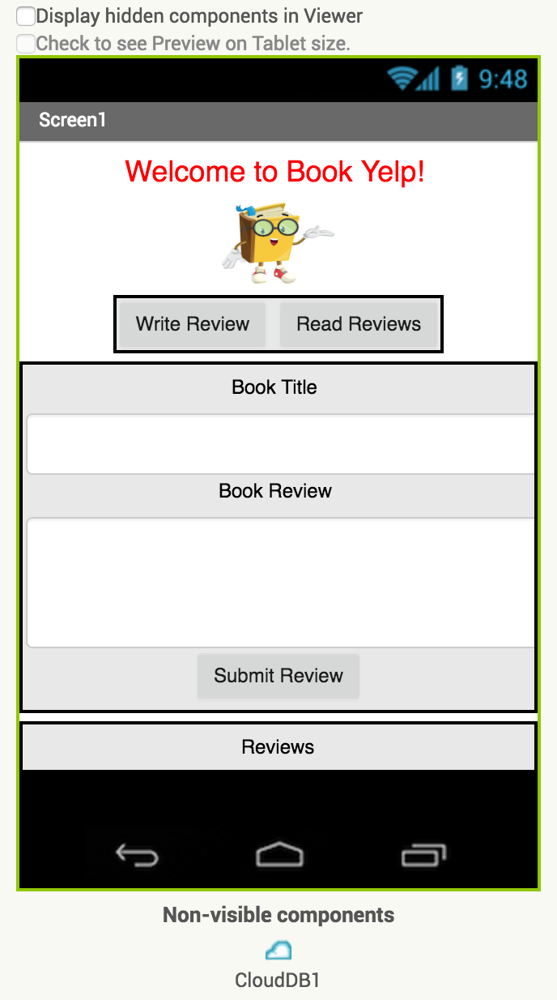
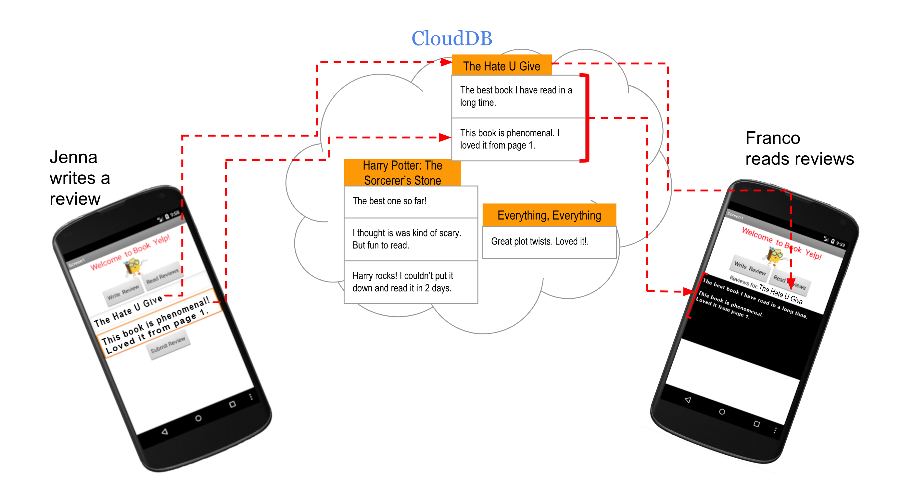
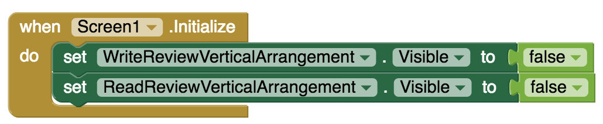

The Challenge
INTRO TEXT HERE FROM YR MEDIA
Click "Connect your App" below to start building your app!
Connect your App
Book Yelp
Introduction

In this project you will create an app that allows multiple users of your app to write and read book reviews. You will be introduced to the CloudDB component of MIT App Inventor and learn how to store, access and modify data in the Cloud.
The User Interface
This is what the user interface looks like when the user starts the program.
When the "Write Review" button is pressed, the following interface opens up where the user can write and submit a review for a book of their choice.
The User Interface
When the "Read Reviews" button is pressed a list of book titles appears which is searchable.
When a particular book title is selected by the user then all the reviews previously submitted for that book title is displayed.
Add Components
Here is how the user interface looks like in MIT App Inventor Designer window.
And here is the Component embedding hierarchy.

Modify Component Properties
Note that there is a horizontal arrangement for the write and read buttons and there are several vertical arrangements where different components are embedded to facilitate hiding and showing. Also note that the "Read Reviews" button is actually a ListPicker from the User Interface palette. The interface where the reviews are displayed is a ListView from the User Interface palette. Here are a few components with some properties that need to be set.

The first property setting ensures that when the the ListPicker "Read Reviews" button is clicked, the list of reviews shown is searchable through the use of a filter.
The second property setting ensures that the user can enter a multi-line text in the TextBox for writing reviews.
Introduction to CloudDB
For this project you will use CloudDB as your database to store the book titles and the associated book reviews entered by the users of your app. This component can be found in the Experimental pallete.

Introduction to CloudDB
You may have previously used the TinyDB component, which is a database for storing data locally on the user's mobile phone or tablet. TinyDB can only be used by the individual user. CloudDB on the other hand allows data to be stored, accessed and modified in the Cloud by multiple users.
Here is what the blocks in the CloudDB drawer look like.

Introduction to CloudDB
Below is a diagram that may help you visualize how you can store book titles as "tags" in the CloudDB where each tag (i.e. book title) is linked to a list containing the reviews associated with that book title. When a user enters a new review for a book title previously entered in the database, that title is identified as a tag and the new review is added to the list of existing reviews associated with the given tag (i.e. book title).
Blocks
Now it is time to give functionality to the User Interface (UI) you have created. Switch to the Blocks Editor.

Initialization
First initialize the app screen by hiding the two vertical arrangements that contain the interfaces for writing and reading reviews.
Writing A Review
When the WriteReviewButton is clicked, reveal the first vertical arrangement containing the interface for writing reviews by making it visible. The second vertical arrangement containing the interface for reading reviews should be hidden.

Submitting A Review
When the user is done writing their review and the SubmitReviewButton is clicked, have the book title be the tag and the review text be the itemToAdd to the CloudDB. With this method you will make sure that all the reviews associated with a particular book title are grouped together. When the SubmitReviewButton is clicked, clear and hide the interface for writing reviews.

Reading Reviews
The button to read the book reviews is actually a ListPicker from the User Interface palette and when the user presses the ReadReviewsListPicker (i.e. the "Read Reviews" button), make the review reading interface contained in ReadReviewVerticalArrangement visible, while hiding the review writing interface. Also send a request to the CloudDB to get a list of book titles stored as tags.

Reading Reviews
When the CloudDB returns the TagList containing the book titles, assign these titles as the Elements of the ReadReviewsListPicker. This assignment will list all the previously entered book titles for the user to view.

Reading Reviews
When the user picks a book title from the list picker, send a request to CloudDB to get all the reviews associated with that book title.

Reading Reviews
The app has to wait to get the response that comes in the GotValue event. When CloudDB returns a list of the reviews for the requested book title, display these in the ReviewsforaTitleList which is a ListView object from the User Interface palette.

Test your App
Test your app thoroughly with the help of multiple users and with multiple phones/tablets. Make sure that each user is able to write and submit a review and is able to read reviews submitted by others.
Congratulations! Fantastic job!
Expand your app
- Currently there is no way to erase all the contents of the CloudDB when you want to restart everything fresh. Create “Clear Database” button to erase everything stored in the CloudDB.
- Make the "Clear Database" button password protected so that only an administrator of the database can erase it.
Need a hint? Click here to see some hints on how you may go about this extension acitivity.
- Allow the users of the app upload images along with their book reviews.
- Allow users to input their book reviews via speech rather than typing.
- Allow users to listen to book reviews rather than read.
- Allow users to rate the books using something like a 5-star system. Report the average ratings associated with each book title.
- Currently any slight differences in the writing of a book title will lead to the creation of different tags. For example, "Catcher in the Rye", Catcher In The Rye" and "CATCHER IN THE RYE" will be assumed to be different book titles. You could solve this issue by making existing book titles selectable for writing review. Come up with a solution to this issue.
Share your App
Published apps

About Youth Mobile Power
A lot of us spend all day on our phones, hooked on our favorite apps. We keep typing and swiping, even when we know the risks phones can pose to our attention, privacy, and even our safety. But the computers in our pockets also create untapped opportunities for young people to learn, connect and transform our communities.
That’s why MIT and YR Media teamed up to launch the Youth Mobile Power series. YR teens produce stories highlighting how young people use their phones in surprising and powerful ways. Meanwhile, the team at MIT is continually enhancing MIT App Inventor to make it possible for users like you to create apps like the ones featured in YR’s reporting.
Essentially: get inspired by the story, get busy making your own app!

The YR + MIT collaboration is supported in part by the National Science Foundation. This material is based upon work supported by the National Science Foundation under Grant No. (1614239). Any opinions, findings and conclusions or recommendations expressed in this material are those of the author(s) and do not necessarily reflect the views of the National Science Foundation.
Check out more apps and interactive news content created by YR here.